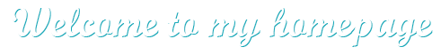

一个有理想有情怀，血气方刚的纯爷们
一个不爱写博客的三流程序员
一个脑残电影爱好者
一个菜鸟股民
关于我
兴趣爱好广泛
喜欢搞事，搞一些别人没搞过的事
喜欢开源，开一些别人没开过的源，欢迎
Follow、Star和F**k
Android装逼指南
NestedScrolling滑动机制
ViewDragHelper使用姿势
CoordinatorLayout解析
进程通信的正确姿势
插件化开发基础
富文本方案集成
Path动画装逼指南
如何用好Canvas
Git基础知识
反编译工具
查看更多
旁门左道
Photoshop阴影的技巧
抠图的正确姿势
这样的设计才叫惊艳
常用的设计工具推荐
如何与产品经理撕逼
人人都是产品经理
联合国大厦的由来
蒋介石发家史
一部把人吓尿的恐怖片
奥斯卡历届获奖短片
查看更多
Android开发
NestedScrolling滑动机制
ViewDragHelper使用姿势
CoordinatorLayout解析
进程通信的正确姿势
插件化开发基础
富文本方案集成
Path动画装逼指南
如何用好Canvas
Git基础知识
反编译工具
旁门左道
NestedScrolling滑动机制
ViewDragHelper使用姿势
CoordinatorLayout解析
进程通信的正确姿势
插件化开发基础
富文本方案集成
Path动画装逼指南
如何用好Canvas
Git基础知识
反编译工具
由
xmuSistone
开发与设计
欢迎抄袭，版权没有，法律不纠